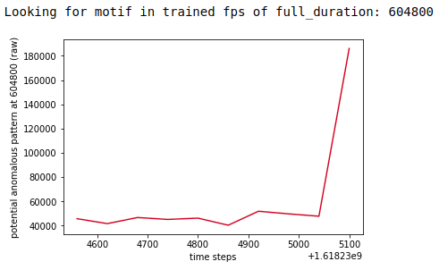
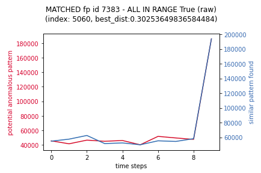
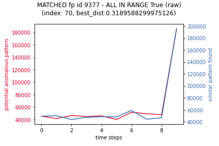

Ionosphere inference
MASS - Similar motifs
Ionosphere inference is a extension of Ionosphere specifically for the purpose of making use of MASS (Mueen’s Algorithm for Similarity Search) for searching time series sub-sequences under z-normalized Euclidean distance for similarity. In simple terms it finds similar patterns.
Note that the terms motif, shape, shapelet and subsuqeunces are somewhat synonymous in this regard. HOWEVER their use in relation to Skyline has distinctions made:
shapelet,
subsequenceor shape: is a snippet of a timeseriesmotif: is shapelet that has be discovered based on distance.matched_motif: is a motif identified as matching some additional criteria (other than distance). A matched_motif can represent asimilar,exactornot_similarmotif.
The initially Ionosphere implemented similarity search solely with the use of feature profiles created with tsfresh, which works very well, however introducing the use of MASS makes Ionosphere work even better. MASS compliments the original SITTCA algorithm, in terms of MASS is very good at shorter pattern similarity search and SITTCA is very good at long pattern similarity search.
It is important to know that MASS only finds similar shapes (values are not taken into account). So a metric that was running steadily at 10 and then jumps to 100 and runs steadily at 100, will have the same shape as a metric that was running at 10000 and then jumps to 100000. However MASS makes it possible to discover similar motifs very efficiently, these discovered motifs can then be validated based not only on their distances but also on their similar range and similarity in their areas under the curve as well. These multiple conditional verifications ensure that the method being used attempts to achieve 0 false negatives.
It is important to state that MASS is being used with very strict default allowed maximum distances and areas so that the outcomes are correct for purpose. The purpose being to find very similar motifs in trained data.
A note on batch_size vs. time series length, even if a batch_size is less than
the length of the time series Skyline only runs a batch_size
if the time series at least 10% larger than the batch_size. Although it is
generally possible to run a batch_size of very similar size on a time series,
errors occur when a time series that has some missing data points is used.
In testing a match was never found on data with a batch_size of 1440 and
settings.FULL_DURATION time series.
Consider the system flags a potentially anomaly and using the subsequence of the last 180 data points of the potentially anomalous time series to create a shapelet.
Using mass-ts the system then searches all the available trained data for the metric to find similar motifs within the trained data. It then filters out similar motifs that are not similar enough based on:
their distance scores
the similar motif not being within the same values range as potentially anomalous motif.
the areas under the curve not being similar enough
If there are similar motifs remaining after the filtering, this is deemed as a match and the instance is considered normal and not anomalous. These examples just show the last 10 data points, in practice the minimum batch size should not be less than 180 data points so as to represent a large enough sample of the data to exclude repetitive volatility shifts.
2 matches are visualised below:
 To demonstrate what inference is filtering out, the following are similar
motifs that are filtered out as they are a similar shape, but they are not
similar enough in terms of the values range (based on a
settings.IONOSPHERE_INFERENCE_MOTIFS_RANGE_PADDING of 10)
The method is based on the best match found wins, not the first match found wins. The first matched found wins method is more efficient in terms of potential compute time, but more importantly the method wants to ensure 0 false negatives.
With Ionosphere inference enabled the analysis pipeline is as follows, best match found wins:
Ionosphere finding similar matching motifs for existing
SECOND_ORDER_RESOLUTION_SECONDSfeatures profiles time series andsettings.FULL_DURATIONfeatures profilesIonosphere comparison to Mirage
SECOND_ORDER_RESOLUTION_SECONDSfeatures profiles and minmax scaled features profilesIonosphere echo comparison to Mirage
settings.FULL_DURATIONfeatures profilesIonosphere comparison to Mirage
settings.FULL_DURATIONminmax scaled features profilesIonosphere layers comparisons
Testing
It is possible to run inference in a testing mode, where all analysis is done and results recorded, but the results do not have any bearing on the normal anomaly detection and alerting, meaning that if inference finds a similar motif that matches, it does not feedback as not anomalous, it just records the results for evaluation and validation, but do note that results will be stored in the database as if it were live.